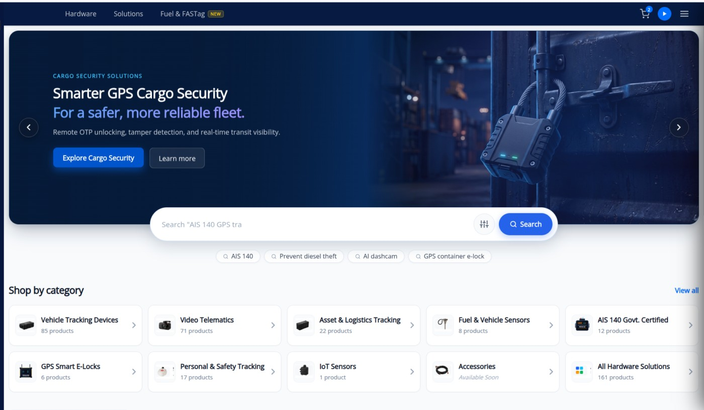
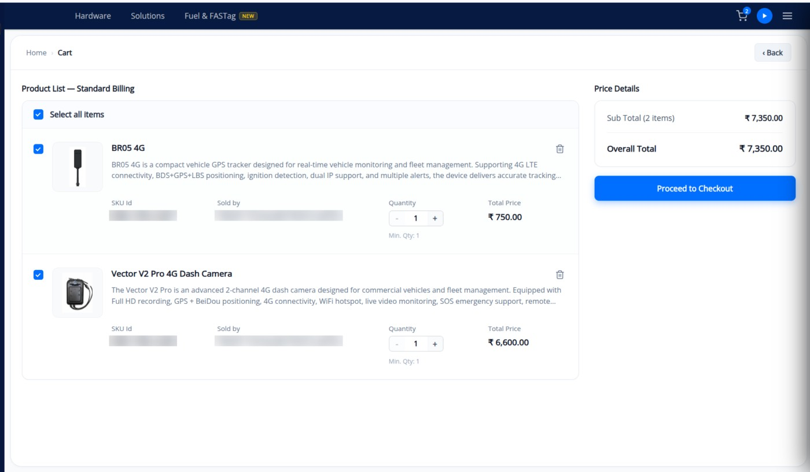
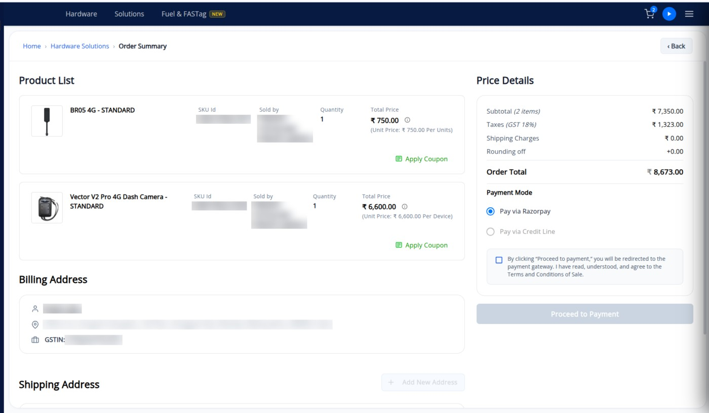
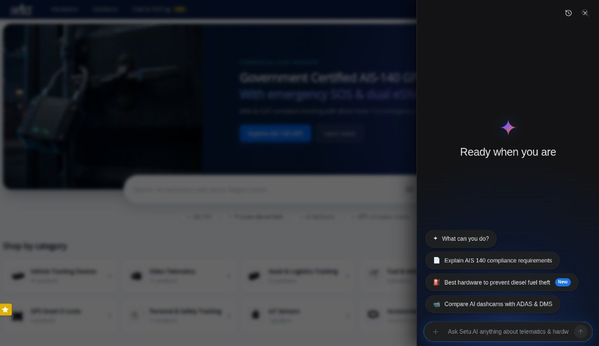

1. Context
I joined as 1 of 3 founding team members responsible for Product and Business Development on a B2B fleet-telematics marketplace in India (client confidential under NDA). The platform serves commercial fleet operators, transport managers, and system integrators who source vehicle tracking units, dash cameras, fuel sensors, and compliance hardware.
The marketplace operates in a private launch with existing clients. As the commercial and product bridge, my responsibility spanned two fronts: leading partner discovery and on-site demonstrations with system integrators, while simultaneously translating their operational blockers into technical specifications for our engineering, UI, and AI teams.
2. Problem
During the initial pre-public-launch phase, system integrators and fleet operators reported recurring operational friction through customer support tickets, discovery calls, and live demonstrations. The existing interface was failing to support the complexity of enterprise B2B procurement:
- Catalog Search & Filtering Bottlenecks: System integrators searching for specific compliance protocols (such as government-mandated AIS 140 devices, dual-IP transmission, or OBD units) could not filter effectively, resulting in manual inquiries and high support overhead.
- Hardware Authenticity & Trust Deficit: B2B hardware purchasers were hesitant to purchase without clear verification of manufacturer authenticity, warranty guarantees, and testing credentials.
- Friction in B2B Checkout: The checkout lacked instant multi-item GST calculations and business invoice breakdowns, causing commercial buyers to abandon orders at the final step.
- Post-Sale Warranty & Value Proposition Gaps: Buyers lacked clarity on device warranty tracking, post-purchase replacement terms, and the platform's unified value proposition versus purchasing directly from fragmented local distributors.
3. Users and Evidence
Rather than relying on internal assumptions, I grounded every product requirement directly in discovery calls and on-site visits:
- 50+ System Integrators in Discovery: Ran partner discovery sessions, on-site client calls, and product demonstrations across regional telematics hubs. System integrators manage installations across hundreds of commercial vehicles and require fast bulk configuration, verified hardware compatibility, and prompt fulfillment.
- Support Ticket Synthesis: Systematically reviewed inbound support tickets and buyer communications. The qualitative data revealed that 60%+ of pre-sales inquiries involved confirming whether a specific SKU met state RTO specifications and whether GST invoices were provided immediately upon checkout.
- Fleet Operator Workflows: Fleet owners indicated that their primary communication channel during daily logistics operations is WhatsApp. Navigating a desktop web portal during transit or on site caused immediate drop-offs.
4. Key Decisions and Trade-offs
With limited engineering bandwidth on a lean founding team, we faced a major architectural and sequencing decision: how to deliver conversational commerce without delaying the essential desktop marketplace revamp.
The Trade-off: Decoupling Phase 1 Delivery vs Monolithic Rollout
Fleet operators demanded WhatsApp ordering, while system integrators desperately needed an improved catalog and checkout. Building full end-to-end purchasing, payment authorization, and banking integrations inside WhatsApp would have taken 4+ months of compliance and backend work.
Decision: We split the roadmap into two disciplined phases:
- Phase 1 (Delivered in ~1 month): Deliver the v2 web UI refresh (advanced search, Verified filter, PDPs, GST checkout), an AI-enabled natural language search bar on the web, and a standalone WhatsApp bot for hardware queries, specs, and support in parallel.
- Phase 2 (Current Planning): Merge AI search and the WhatsApp bot into an integrated conversational ordering pipeline, allowing buyers to complete orders directly within WhatsApp without leaving the chat thread.
Commercial Partnerships & Compliance: In parallel with UI execution, I drove the FASTag agreement end to end with our accounts and CA teams (compliance and finance), securing the legal and accounting foundations. This paved the way for subsequent payment workflows with banking partners.
5. What I Built
To eliminate ambiguity between user feedback and engineering execution, I took initiative across both product specification and technical prototyping:
- Self-Initiated 12-Requirement PRD: Wrote a complete PRD defining 12 prioritized requirements (P0/P1 scope), user stories, granular acceptance criteria, edge cases, business rules, risks, and success metrics.
- v2 Interactive Clickable Prototype: Built the v2 clickable prototype using Claude Code, modeling the complete buyer journey: advanced multi-faceted search, the "Verified" filter for authenticated SKUs, detailed listing pages, product-detail pages (PDP) with technical parameters, and a GST-ready multi-item checkout flow.
- Executive & Partner Presentation: Presented the clickable prototype directly to the CEO, COO, and an enterprise hardware partner. The UI team adopted this prototype as the primary reference for the final production design.
- Cross-Functional Delivery: Partnered with engineering, UX/UI design, and AI teams in daily standups to deliver the v2 UI, AI-enabled search (phase 1), and the WhatsApp bot (phase 1) in approximately one month.






6. Outcome
The transition from discovery feedback to a functional Claude Code prototype and aligned engineering sprints produced concrete commercial and product results:
- Rapid 1-Month Delivery: Engineering, UI, and AI teams shipped the complete v2 UI redesign, AI-enabled search (phase 1), and WhatsApp bot (phase 1) in about one month.
- INR 2.47 Cr in Platform Order Value: Platform order value reached INR 2.47 Cr across 6 months (May to Oct 2026) with existing clients in private launch.
- Operational Support Deflection: Inbound pre-sales support tickets regarding device specifications, GST calculations, and compliance matching dropped significantly as buyers self-served through the v2 interface.
- FASTag Institutional Agreement: Closed the regulatory and accounting compliance agreement end to end with accounts and CA teams, laying the groundwork for banking payment partner workflows.
7. What I Would Do Differently
Reflecting on this product cycle, there are key areas I would approach differently in future enterprise marketplace builds:
- Instrumenting Automated Checkout Funnel Analytics Early: In Phase 1, we relied on manual database order reconciliation and direct account executive updates. Instrumenting automated funnel event telemetry from day one would have given us real-time drop-off visibility between cart addition and payment gateway completion.
- Involving CA & Compliance Partners During PRD Drafting: The FASTag partnership experienced procedural delays due to financial compliance review cycles. Involving the CA and legal accounts teams during initial PRD scoping—rather than post-prototype—would have compressed the partnership turnaround by at least two weeks.
- Establishing Structured Usability Testing Cohorts: While our discovery with 50+ system integrators surfaced critical pain points, usability testing of the clickable prototype was conducted ad-hoc during sales calls. A dedicated testing cohort of 5 recurring integrators would have enabled tighter quantitative benchmarking on task completion speed.